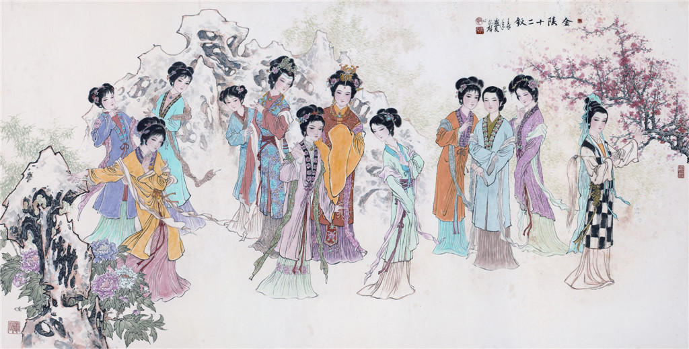

今天脑补一下，如果我能够娶红楼梦中一位女子为妻，我会选谁。用正排的方法有点困难，尝试用排除法逐个过滤掉我无法接受性格的人物。另外，红楼梦中所有女子范围太大，我从中选取一些有鲜明性格的人出来。

林黛玉
虽然本书中宝玉最钟爱的是黛玉，二人从小青梅竹马，互相将对方视为 soulmate，但我是无法接受黛玉这种性格的，她孤傲、矫情，总爱使小性子，喜欢说「暗语」不把话说明白。而且书中对黛玉外貌的描写给我的印象是娇瘦，该丰满的地方不够丰满。唔，你懂的。
态生两靥之愁，娇袭一身之病。泪光点点，娇喘微微。闲静时如娇花照水，行动处似弱柳扶风，心较比干多一窍，病如西子胜三分。
黛玉饭量很小，对吃没太大兴趣，如果我和一个妹子约饭，还没吃几口对方就说吃饱了，或者对方一开始就说今天不饿，你点你的，我会非常恼火，不能成为饭搭子的另一半我是不能接受的。
当然，人家黛玉是绛珠仙草转世，我一凡人也配不上她。
王熙凤
王熙凤性格火辣，贾母给她起了个外号「泼皮破落户儿」, 但她性格上太要强了，心机很重，小厮兴儿对她的描述是：「嘴甜心苦，两面三刀」，「上头笑着，脚底下使绊子」，「明是一盆火，暗是一把刀」，可见王熙凤手段还很毒辣。
凤姐这样的女人需要一位性格也很强势的夫君来配才能驾驭得住，书中懦弱的贾琏在王熙凤面前时服服帖帖，王熙凤实时监视着他的行踪，不给他半点接触其他女人的机会，连自己的陪嫁丫鬟也不可以（在古代陪嫁丫鬟默认是对方的妾），但是只要王熙凤不在跟前贾琏就抓紧时间从外边拉个女人到自己房中，贾琏的主要目的就是为了发泄欲望，想在其他女人面前获得「一家之主」的体验，在尤二姐那几回更是如此。
尤二姐的下场可以看出，王熙凤还是个嫉妒心非常重的人。外表贤良、内心恶毒，这种女人太恐怖了。
薛宝钗
书中对宝钗外貌描写和黛玉形成了鲜明对比，一个丰满、一个瘦弱。
可巧宝钗左腕上笼着一串，见宝玉问她，少不得褪了下来。宝钗生得肌肤丰泽，容易褪不下来。宝玉在旁看着雪白一段酥臂，不觉动了羡慕之心……再看看宝钗形容，只见脸若银盆，眼似水杏，唇不点而红，眉不画而翠，比黛玉另具一种妩媚风流，不觉就呆了。
宝钗的心理年龄应该比园子里其他姐妹大不少，原因是她的父亲去世的早，而她们家又是皇商，弟弟薛蟠又不务正业，只能她和母亲担起家族的事业，很小的时候就接触到了成人「污浊」的世界。
宝钗太冷了，缺少小姑娘们那种灵巧活泛的劲儿，在男朋友面前不会发嗲，不会要求亲亲抱抱举高高，不爱开玩笑，和她一起生活会缺少一些生活上的乐趣。
贾探春
太耿直，缺少风趣。处事不够圆融、爱挑刺，有些愤世嫉俗，最后她自己也是选择远离这个到处是窟窿的家族，远嫁到他乡。
兴儿在尤二姐面前这样描述探春：
三姑娘的浑名是‘玫瑰花’…玫瑰花又红又香，无人不爱的，只是刺戳手。……
秦可卿
撇开可卿的真实死因不谈，在我看来她有些扶弟魔，为了促成秦钟和宝玉的见面，动用了心机。而且当她得知秦钟在学堂被人欺负后把自己气得不行。
今儿听见有人欺负了她兄弟，又是恼，又是气。恼的是那群混账狐朋狗友的扯是搬非、调三惑四的那些人；气的是她兄弟不学好，不上心念书，以致如此学里吵闹。她听了这事，今日索性连早饭也没吃。
史湘云
湘云性格豪爽，平时大大咧咧的，喜欢穿男装，跟她论兄弟一定是不错的，但是缺少一些女人味，有些过于粗犷，不精致。
妙玉
假清高。
欲洁何曾洁，云空未必空！可怜金玉质，终陷淖泥中。
袭人
袭人给人一种大姐姐的感觉，不需要被保护，但是男生恰恰容易喜欢上自己想保护的女生。但也不得不说袭人是个非常合适的结婚对象，勤家持家、为人和善，处事方面尽量大事化小、小事化了，作者在判词中也写到娶到她的人是有福的。
堪羡优伶有福，谁知公子无缘。
作者还有意将袭人映衬为宝钗，将晴雯影射为黛玉，因为上边说过黛玉了，下边不再对晴雯进行赘述。
王夫人眼中的晴雯：水蛇腰，削肩膀，眉眼有点像林黛玉。
香菱
实话实说，香菱是我喜欢的类型，虽遭遇了各种不幸，仍然那么天真无邪。她的脾气好，模样也好，作者从头到尾都在透露对香菱的怜悯。我喜欢香菱也可能有可能出于同情，被拐卖后到薛蟠这个不懂得怜香惜玉之人身边做妾，薛蟠娶夏金桂前，香菱还高兴地东跑西跑地帮忙，从这一点看出，香菱是那种真心想让别人好的人。夏金桂过门后香菱被百般欺凌，薛蟠也不分青红皂白地打她，香菱只能忍气吞声。香菱的结局有很多说法，我们这里不展开讨论。
香菱嫁给薛蟠后我内心也是愤愤不已，好歹贾琏替我骂了他：「方才我见姨妈去，不妨和一个年轻的小媳妇撞了个对面，生得好齐整模样……谁知就是上京来买的那小丫头，名叫香菱的，竟与薛大傻子做了房里人，开了脸，越发出挑的标致了，那薛大傻子真玷辱了她。」
从香菱学诗可以看出，香菱极其聪明好学，她很羡慕那些可以读书的女孩子，不管自己处境多么糟糕也要想办法去学习，吾辈之楷模。
脂砚斋对香菱的评语极高，集其他人的优点于一身。
细想香菱之为人也，根基不让迎探，容貌不让凤秦，端雅不让纨钗，风流不让湘黛，贤惠不让袭平…
所以，如果让我选一个红楼梦中的女子作为妻子的话，我想我会选择香菱。